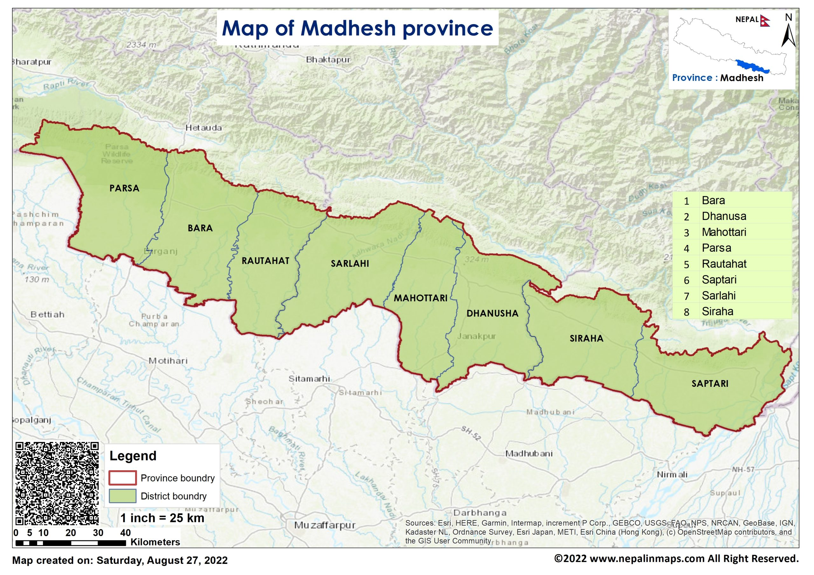

Map

Madhesh Province (Nepali: मधेश प्रदेश, romanized: Madhēś pradēś) is a province of Nepal in the Terai region with an area of 9,661 km2 (3,730 sq mi) covering about 6.5% of the country's total area. It has a population of 6,114,600 as per the 2021 Nepal census, making it Nepal's most densely populated province and the smallest province by area.[6][7] It borders Koshi Pradesh to the east and the north, Bagmati Province to the north, and India’s Bihar state to the south and the west. The border between Chitwan National Park and Parsa National Park acts as the provincial boundary in the west, and the Kosi River forms the provincial border in the east. The province includes eight districts, from Parsa in the west to Saptari in the east. It is a centre for religious and cultural tourism.
As per Central Bureau of Statistics, Madhesh Province covers about 9,661 km2 (3,730 sq mi) of Nepal's total area of 147,516 km2 (56,956 sq mi). With 6,114,600 inhabitants as of 2021, it is Nepal's second most populous province. Madhesh Province is surrounded by the Chitwan District to the west, Makwanpur District and Sindhuli District and Udayapur District to the north, Sunsari District to the east, and India to the south.